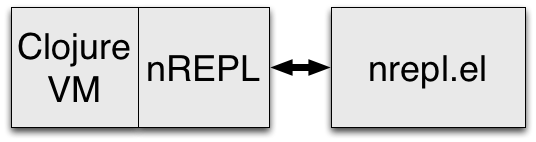
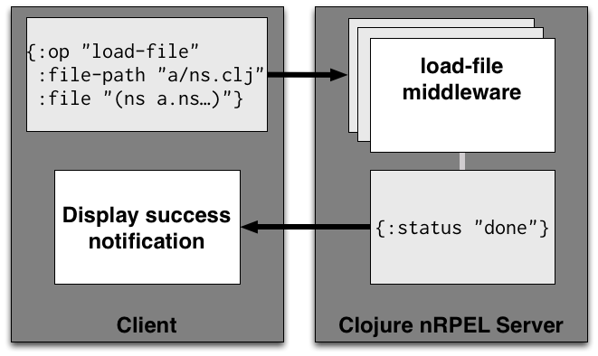

Ritz
The Missing Clojure Tooling

History
| debug-repl | George Jahad @georgejahad (with an insight by Alex Osborne @atosborne) |
|---|---|
| swank-clojure | Phil Hagelburg @technomancy |
| CDT | George Jahad @georgejahad |
Started Ritz to provide Clojure debugging in SLIME via SLDB
nREPL and nrepl.el
- transport (socket & bencode), middleware stack, session management
nREPL Chas Emerick / @cemerick
load-file
Support for Clojure and ClojureScript
*nrepl-events*
("id" "127"
"op" "load-file"
"session" "fdf2bc63-0bba-4908"
"file" "(ns pallet.utils\n ..) ..."
"file-path" "/src/pallet/utils.clj"
"file-name" "utils.clj")
(dict
("id" . "127")
("ns" . "user")
("session" . "fdf2bc63-0bba-4908")
("value" . "#'utils/log-multiline"))
Ritz
https://github.com/pallet/ritz
Started life as a fork of swank-clojure, but is now a very different codebase.
Initially was to provide SLDB for Clojure in SLIME.
Now refactored to support nREPL.
Ritz Components
Ritz REPL Utils
No dependencies (apart from dynapath)
Can be used to implement a REPL
Can be used to augment a REPL
Ritz nREPL Middleware
Can be used in any nREPL server
- javadoc
- javadoc for symbol
- apropos
- doc for related functions
- doc
- Clojure doc for symbol
- describe-symbol
- Clojure doc and description
- complete
- simple and fuzzy completion
- eval
- keep track of source forms
More Ritz Components
- nrepl-codeq
- Middleware for function history via codeq
- nrepl-hornetq
- An nREPL server over HornetQ
Ritz Debugger Middleware
Uses JPDA.
Clojure JVM processes launched by lein-ritz.
Could be used by other (non-emacs) clients.
Ritz Debugger
nrelp-ritz.el and slime-ritz.el
Emacs packages for ritz extensions.
Adds something like SLDB to nrepl.
Install
nrepl.el and nrepl-ritz.el are available as an Emacs package in Marmalade.
(require 'package)
(add-to-list 'package-archives
'("marmalade" .
"http://marmalade-repo.org/packages/"))
(package-initialize)M-x package-install nreplM-x package-install nrepl-ritzInstall ritz plugin
Add lein-ritz to you :plugins in
~/.lein/profiles.clj
:user {:plugins [[lein-ritz "0.6.0"]]Running a REPL
Browse to a file in your clojure project and jack-in:
M-x nrepl-jack-inM-x nrepl-ritz-jack-inLeiningen Profiles
Configure your favourite middleware in ~/.lein/profiles.clj.
:user
{:repl-options
{:nrepl-middleware
[ritz.nrepl.middleware.doc/wrap-doc]}}Or add project specific middleware in project.clj
Break on exception
Examine stack traces before the stack unwinds. Needs to be turned on:
M-x nrepl-ritz-break-on-exceptionuser>(/ 1 0)
Break on exception - restarts
Filtering of exceptions is via "restarts" displayed as part of the stacktrace.
Divide by zero
java.lang.ArithmeticException
Restarts:
0: [CONTINUE] Pass exception to program
1: [ABORT] Abort request.
2: [IGNORE] Do not enter debugger for this exception type
3: [IGNORE-MSG] Do not enter debugger for this exception message
4: [IGNORE-CATCH] Do not enter debugger for exceptions with
catch location clojure.lang.Compiler.*
5: [IGNORE-LOC] Do not enter debugger for exceptions with throw
location clojure.lang.Numbers.*
Stacktrace:
0: clojure.lang.Numbers.divide (Numbers.java:156)
1: clojure.lang.Numbers.divide (Numbers.java:3691)
2: ritz-conj.example/eval2845 (UNKNOWN:-1)
Controlling the Filters
C-c M-fM-x nrepl-ritz-exception-filters- e
- enable
- d
- disable
- C-k
- remove
- s
- save
What's caught, and what's not
Any (try ... (finally ..)) block means that JPDA
considers an exception within that block as caught
(with-open [f (io/reader f)] ...)Makes filtering on caught/uncaught meaningless.
Breakpoints
Like any good debugger
Need break on exception turned on for the moment!
C-c C-x C-bM-x nrepl-ritz-line-breakpointC-c M-bM-x nrepl-ritz-breakpointsUses restarts for Step, Step Over, and Step Out
Jump to source
Linking source code to stack frames requires that the source is on the classpath.
The Ritz servers arrange this if the source code is in your local repository.
$ lein pom
$ mvn dependency:sourcesEvaluation
You can evaluate an expression within the context of a frame. Just select the frame, and press:
- e
- Evaluate expression.
- d
- Evaluate and pretty print result.
Inspector
In ritz-swank, just press Enter on any local variable to
pop up the SLIME inspector.
Locals Clearing
Clojure does something called locals clearing, to avoid holding onto the head of lazy sequences. This can result in locals showing up as nil, even when they aren't really.
Can be switched off in 1.4+
Locals Clearing - Disable on Compile
Use a prefix argument (C-u) to the compile commands
to disable locals clearing on the code being compiled. Not ported
to nrepl.el yet.
Locals Clearing - Disable Globally
To disable locals clearing globally:
(alter-var-root #'*compiler-options*
assoc :disable-locals-clearing true)Disassembly
In slime-ritz, Press 'D' on any frame to see the JVM bytecode for the frame
Threads
M-x nrepl-ritz-threads
============================================================================================
:id | :name | :status | :at-breakpoint? | :suspended? | :suspend-count
============================================================================================
| system | | | |
| main | | | |
1 | main | :wait | false | false | 0
1569 | JDI-VM-Control-Thread | :running | false | true | 1
1782 | msg-pump4905 | :wait | false | false | 0
5228 | Reference Handler | :wait | false | false | 0
5229 | Finalizer | :wait | false | false | 0
5230 | Signal Dispatcher | :running | false | false | 0
============================================================================================
Project Support
Reload project to pick up classpath changes.
M-x nrepl-ritz-reload-projectSwitch project
M-x nrepl-ritz-load-projectRun lein targets on project
M-x nrepl-ritz-leinSplit out into the nrepl-project project as an nREPL
middleware.
Related Work
https://github.com/technomancy/limit-break
A version of debug-repl for nrepl.
The simplest thing that could work and not need any extra setup beyond nrepl.el.
Direction - Features
Parity with ritz-swank:
- Breakpoints
- Inspector
Other Ideas:
- Log Evaluation of expressions
- Make the debugger scriptable
Direction - Other possibilities
Scriptable debugging
http://www.cs.brown.edu/~sk/Publications/Papers/Published/mcskr-dataflow-lang-script-debug-journal/
Conclusion
nREPL middleware provides flexibility.
Make Ritz the goto place for middleware and debugger.
Support via clojure-tooling mailing list, the main clojure mailing list
Freenode IRC #pallet, #clojure